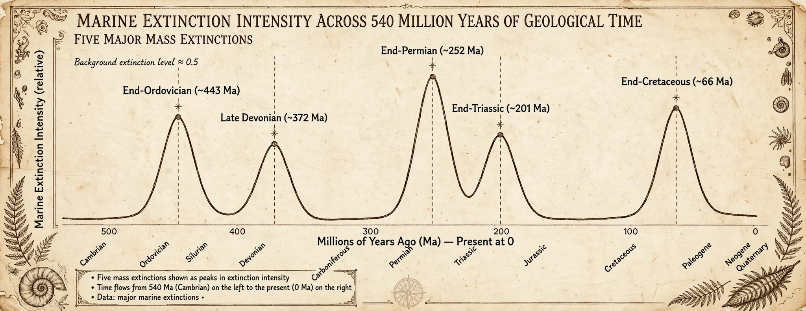

| Also known as | Biotic crisis, extinction event |
|---|---|
| Definition | Loss of ~75% or more of species in a geologically short interval |
| Number recognized | Five major ("Big Five") in the Phanerozoic |
| Worst event | Permian–Triassic ("Great Dying"), ~252 Ma |

An extinction event (also known as a mass extinction or biotic crisis) is a widespread and rapid decrease in the biodiversity on Earth. Such an event is identified by a sharp change in the diversity and abundance of multicellular organisms. It occurs when the rate of extinction increases in relation to the rate of speciation; in the most severe cases, more than 75% of species vanish within a geologically short interval.
Paleontologists recognize five major mass extinctions in the last 540 million years:
Proposed mechanisms include massive flood-basalt volcanism, asteroid or comet impacts, ocean anoxia, sea-level change, and rapid climate warming or cooling. Most major events probably involved several reinforcing stresses.
Many biologists argue that a human-driven "sixth mass extinction" — the Holocene extinction — is now under way, with current extinction rates estimated at tens to hundreds of times background levels due to habitat destruction, overexploitation, introduced species, and climate change.
From Wikipedia, the free encyclopedia. Recreated from memory.